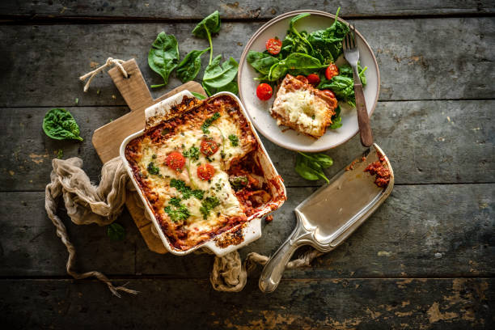
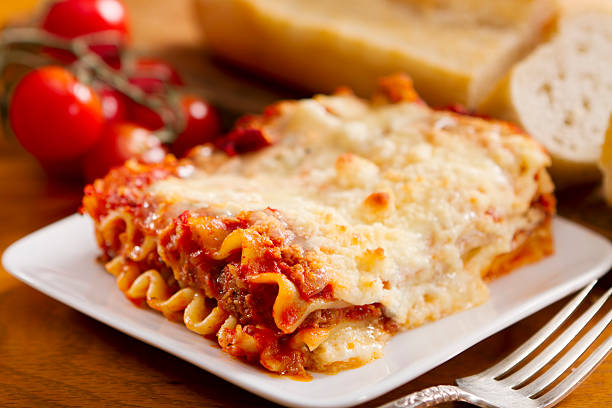
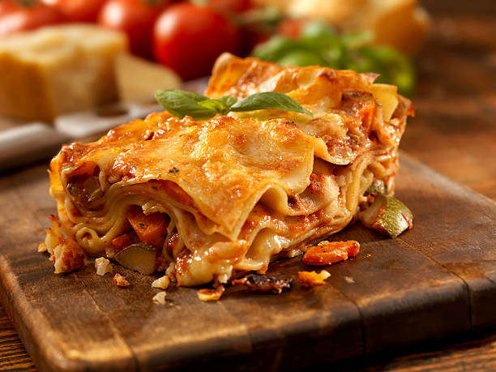

Lasagna Recipe
Ingredients
Meat: This super meaty lasagna has sweet Italian sausage and lean groundbeef.
Onion and garlic: An onion and two cloves of garlic are cooked with the meat to add tons of flavor.
Tomato products: You'll need a can of crushed tomatoes, two cans of tomato sauce, and two cans of tomato paste.
Spices and seasonings: This lasagna recipe is flavored with fresh parsley,dried basil leaves, salt, Italian seasoning, fennel seeds, and black pepper.
Lasagna noodles: Use store-bought or homemade lasagna noodles.
Cheeses: Parmesan, mozzarella, and ricotta cheese make this lasagna extra decadent.
Egg: An egg helps bind the ricotta so it doesn't ooze out of the lasagna you cut into it.

Steps
Make the meat sauce.
Cook the noodles.
Make the ricotta mixture.
Layer the lasagna according to the recipe instructions.
Cover with foil and bake.
Let the lasagna rest before serving.

How to Layer Lasagna.
Lasagna should be layered in the following order:
Meat sauce
Noodles
Ricotta mixture
Mozzarella slices
Meat sauce
Parmesan cheese
Repeat the layers, then top with the remaining Parmesan.
